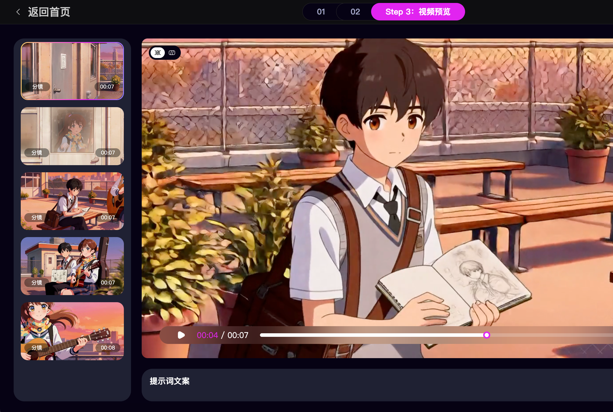
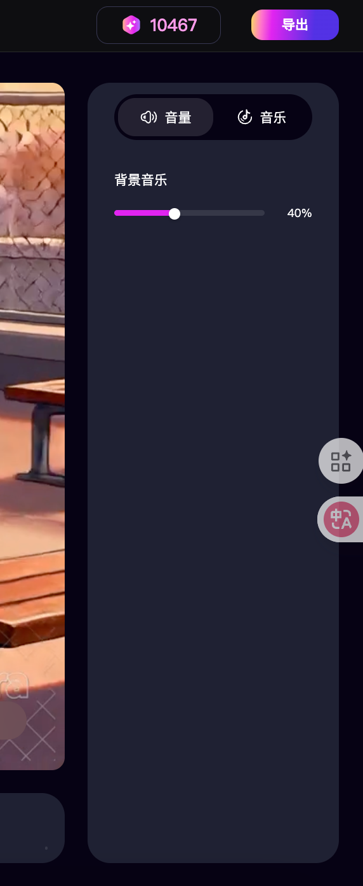
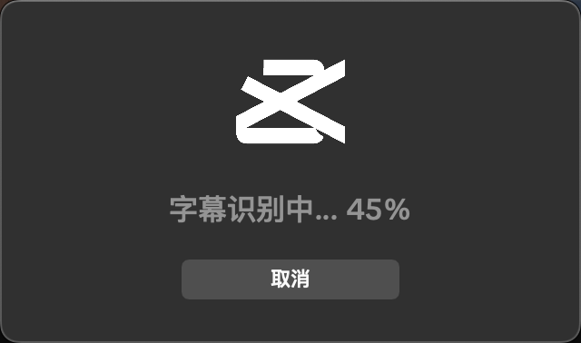
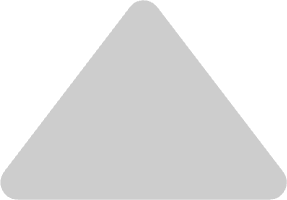
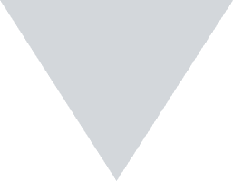
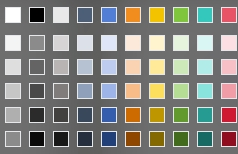

我陈平安，唯有一剑，可搬山，倒海
字幕入口与开关控制
1. 位置： 字幕工具栏下方；
2. 交互：使用switch开关组件；
2.1 开启状态：用户点击开启出发，系统加载字幕生成，显示加载弹窗。 （若无字幕数据，则需要加载，若历史有识别过加载字幕数据，则直接显示）
2.2 加载逻辑：
2.2.1 全量加载：识别所有分镜，为每个分镜加载相应的字幕内容。
2.2.2 视频状态处理：
- 生成成功：直接在画面上叠加字幕层。
- 生成中 ： 字幕层处于“等待中”状态。当视频生成完成后，自动叠加字幕。
- 生成失败： 跳过字幕加载，不显示字幕层，且不阻塞其他分镜的字幕显示。
2.3 关闭状态：当用户点击关闭，则隐藏视频预览的字幕层。
3. 涉及历史分镜切换：
3.1 当用户切换分镜的底层视频（例如：从分镜一 A视频 切换回分镜一 B视频）时，字幕内容保持不变。
3.2 字幕层始终悬浮在当前显示的视频之上。
例：分镜 1 的台词是“我陈平安”，用户生成了 3 个不同画面的视频（在同一个分镜列表下）。无论用户选择哪个视频版本作为最终画面，字幕始终显示“我陈平安”。
4. 按钮开关联动操控面板
4.1 按钮处于 off时：
- 样式内容区：不支持点击，置灰。
- 内容编辑区：无内容，显示占位图/文案：“请先开启字幕开关以编辑内容”
4.2 当开关处于 ON 时：面板高亮，所有控件可操作。
1
字幕加载中，请稍等～
取消
暂无字幕内容

2
字幕样式编辑
1. 设置项：
- 字体： 下拉选择（方正黑体、宋体等）。
- 字体大小： 输入框（默认 字体大小UI定）。
- 文本颜色： 支持点击下拉，选择给定好的色块。
2. 保存逻辑：
- 修改任意样式参数，播放器内的字幕实时更新，无需点击保存。
- 样式修改对所有分镜生效
2
字幕位置
0
X
0
Y


- 字幕位置： 建议采用 画布正中间 为原点 (0, 0)的标准坐标系。
X 轴： 控制水平位置。数值增大向右移动。
Y 轴： 控制垂直位置。数值增大向下移动。
字幕
挥剑问天，斩尽世间不公
00:00
00:02
00:04
00:06
00:08
00:10
剑出鞘，必有所向
我陈平安，
唯有一剑，可搬山，倒海
我陈平安，唯有一剑，可搬山，倒海
音乐
音量

分镜记录
字幕
字体
字体大小
文本颜色
我陈平安，

字幕编辑
字幕
1
时间轴功能
1. 底部时间轴：
1.1 位置：位于视频正下方；
1.2 时间轴元素：
- 时间轴时长：固定显示 00:00 到 00:10（10秒）
- 光标：垂直线，指示当前预览画面对应的时间点；
- 字幕轨道：位于时间轴下方，承载字幕块；
- 操作：时间轴右上角：【添加】、【删除】图标；
1.3 右侧编辑区：
当时间轴上选中某个字幕块时，右侧输入框显示该字幕的内容；若未选中任何字幕，右侧输入框置灰，显示默认文案“字幕展示未开启”。
2. 字幕块交互：
2.1 字幕块在轨道上以色块的形式存在；
2.2 当光标移动到某个字幕块的时间范围内时，该字幕块自动进入高亮状态。 右侧“字幕编辑”框立即显示当前激活字幕的文字内容。
2.3 鼠标点击选中：
当用户点击轨道上的某个字幕块，光标立即跳跃至该字幕块的区间，该字幕块变为 “选中态”。 右上角的 [删除] 图标从置灰状态变为 可用状态。
3. 字幕时长调整：
3.1 鼠标悬停在字幕块的左边缘或右边缘，光标变为 <-> 调整图标。
3.2 交互：
- 拖动左边缘：修改起始时间。
- 拖动右边缘：修改结束时间。
3.3 限制：
- 不能拉伸至小于 0.5s；
- 不能与其他字幕块重叠；
- 不能超出视频的总时长边界；
4. 增删改逻辑：
4.1 删除字幕：
- 入口： 时间轴右上角的删除icon；
- 置灰：当光标处于空隙处，且无字幕块被手动选中时，图标置灰。
- 操作： 点击删除后，该色块从轨道消失，右侧编辑框内容清空，并在画面上移除对应文字。
4.2 添加字幕：
- 入口：时间轴右上角的添加icon；
- 添加位置：系统需要检测当前光标右侧的第一个足够大的空隙；若光标右侧有空位（时长 > 0.5s）：在光标右侧最近的空位插入一个新的字幕块。若光标右侧无空位，弹出toast 提示“当前位置无空间添加字幕，请先调整现有字幕”。
- 默认状态： 添加的字幕默认填满空隙，若空隙太长，最大限制3s； 默认文案： 请编辑字幕内容。
- 添加字幕交互 ：添加后，自动选中该字幕块，右侧输入框自动聚焦，支持用户编辑字幕文案。
4.3 编辑字幕内容：
- 在在时间轴选中字幕块 ，右侧侧边栏输入框修改文字。右侧修改文字时，预览画面上的文字实时更新。
5. 边界情况处理：
5.1 视频生成中，时间轴显示loading骨架，不可操作。生成视频完成后加载字幕块 （前提是字幕总开关为开启状态）
5.2 视频时长变更时（比如分镜1的a视频为8s，分镜1的b视频为6s，从历史分镜记录中切换了更短的视频时），则截断超出 4s 范围的字幕。
5.3 当鼠标点击轨道上的空白处，则光标跳至点击处，取消字幕块的“手动选中态”，删除icon隐藏，右侧编辑框显示“暂无字幕内容”。
4
4
2
3
我陈平安，唯有一剑，可搬山，倒海
2
字幕
暂未开启字幕内容
00:00
00:02
00:04
00:06
00:08
00:10
我陈平安，唯有一剑，可搬山，倒海
音乐
音量
分镜记录
字幕
请开启字幕
字幕编辑
4
3
字体
字体大小

文本颜色
字幕